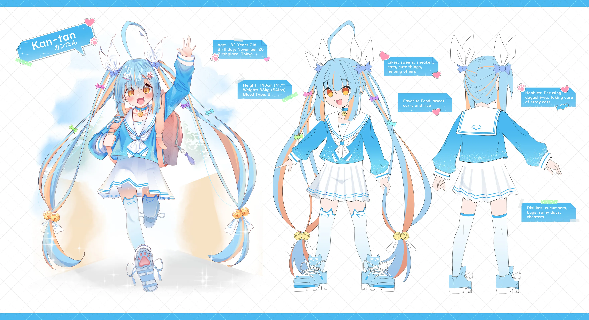
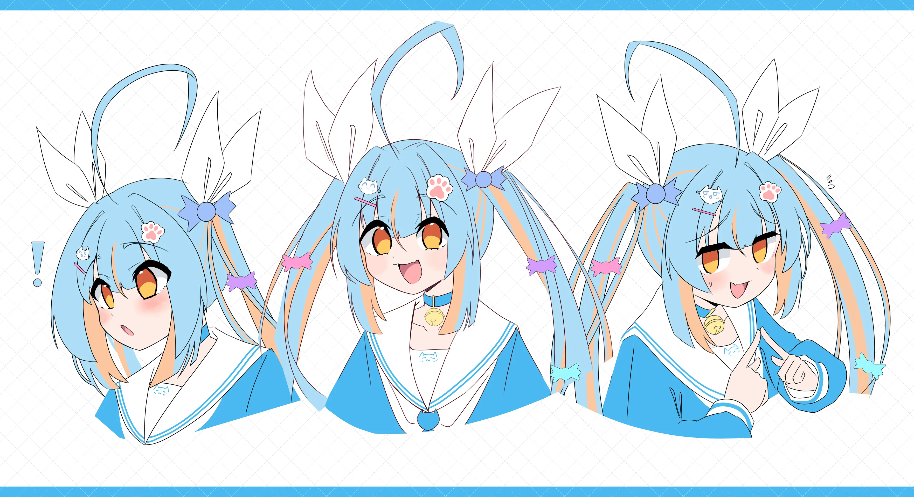
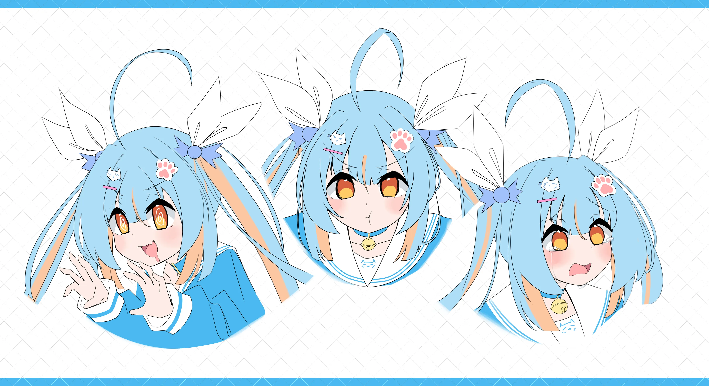
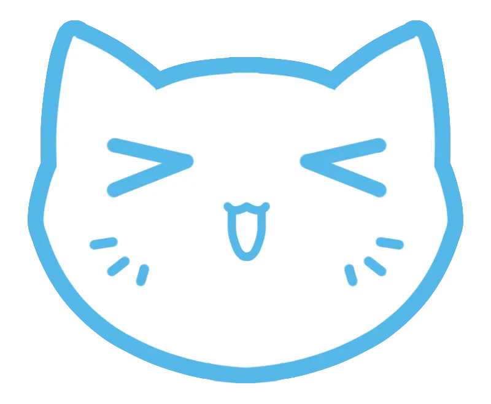

About Kantan Japanese
Kantan Japanese is an Open Source project founded by Seth Clydesdale with the goal of making studying and practicing the Japanese language easier for everyone. Thanks to being open source, anyone can help contribute to our initiative to help improve our codebase, correct typos, ensure the accuracy of our content, and more. Our hopes are to nuture this project into a platform that students, teachers, and universities around the world can utilize for teaching and practicing the Japanese language, free of charge.
We hope that our project will be of help to you and we look forward to collaborating with each and every one of you who are interested in doing so!
About Kan-tan
Kan-tan, also known as "Kanny," is the mascot for Kantan Japanese. She's a positive, outgoing, girl with a sweet tooth who's always looking out for her classmates. She firmly believes that you should never give up, and that a smile (or candy) can make anyone's day brighter. Some of her favorite things in the whole world are candy and cats, and she can always be found supporting the local dagashi-ya or feeding the neighborhood strays.
Kan-tan is not just any old mascot either, you can even interact with her in our various conversation practice exercises across our website called "Let's Chat with Kan-tan!" These exercises aim to help you practice content learned in each lesson and Kan-tan will even correct you if you get something wrong. She's always willing to help you out with your studies, so don't be afraid to chat with her!




...Just between you and me, Kan-tan isn't actually 132 years old. It's a goroawase for hi-mi-tsu that she likes to trick people with.Team Members and Contributors
It is thanks to the hard work of our team members and contributors that Kantan Japanese is what it is!
Team Members
Contributors
Sponsors
Without the generosity of our sponsors we wouldn't be able to work on this project full time, do giveaways, reward contributors, hire talented individuals, and more. So thank you very much for your support; we greatly appreciate it!
Diamond Sponsors
Gold Sponsors
Silver Sponsors
Bronze Sponsors
Individual & Past Sponsors
Special Thanks
This project wouldn't be possible without the following individuals and resources. So thank you!
- Jitendex and JMdict for the bulk of our vocabulary definitions.
- Tatoeba for some of our example sentences and helping to give us inspiration for others.
- The following websites and organizations for the majority of audio files used in our vocabulary.
- Tofugu and Wanikani (available on GitHub)
- Kanji Alive (available on GitHub)
- Wiktionary
- Lingua Libre
- Wikipedia for some of the imagery used in our articles.
- KANJIDIC for the bulk of our kanji meanings, readings, and more.
- JLPT Resources for the information on what JLPT level each word, kanji, grammar point is.
- KanjiVG for our stroke order images.
- animCJK for the awesome animated stroke order images.
- Kanji Canvas for the kanji recognition used for our stroke order exercises.
- Wanakana for the Romaji IME used in written exercises.
- TinySegmenter for the Japanese word segmentation software used to create the input buttons in our written exercises for Easy Mode.
- dragula for the simple drag and drop used in our drag and drop exercises.
- easytimer.js for the super easy timer used to keep track of the time in our exercises.
- Genanki.js for the JavaScript implementation of Genanki that lets us generate our Anki decks in the browser.
- Excel-Builder-Vanilla for making it possible to export our vocabulary lists as excel spreadsheets.
- sql.js, FileSaver.js, fflate, and JSZip for making it possible to create and save files, such as our Anki decks and spreadsheets.
- Font-Awesome for the awesome icons used throughout our website.
- Noto Sans JP for our default font face.
- Noto CJK and Sawarabi Gothic for the fonts used in the Hiragana/Katakana stroke order exercises.
- CodeMirror for the rich editor used in our Article Editor.
- Everyone who helped support or contribute to this project, whether it was on GitHub or outside of it.
- And you, for using our website